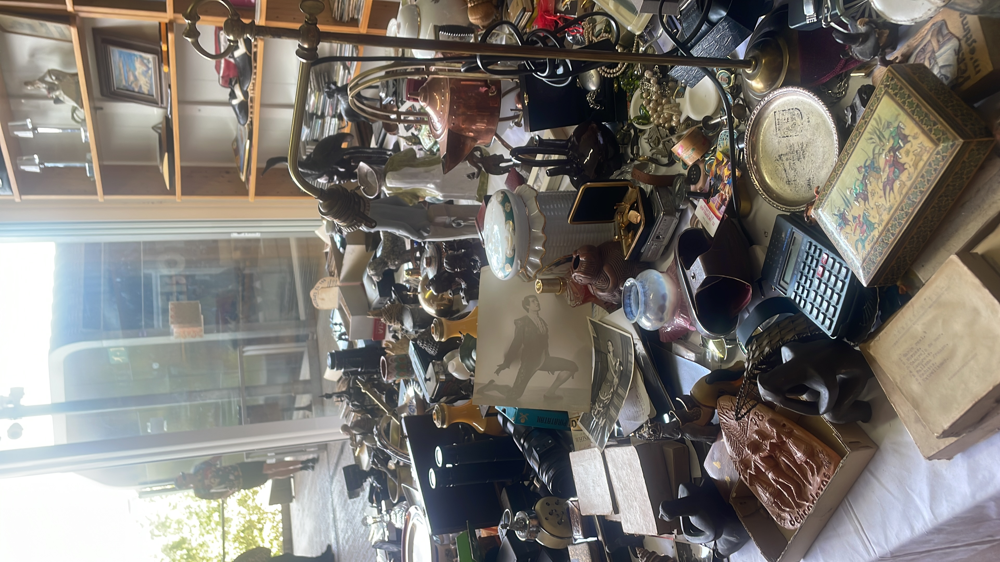

O PROBLEMA NÃO É
É falta de curadoria.
Curadoria é escolher o que fica e o que sai.
Um post que responde dúvida, mostra bastidor
ou prova resultado vale mais do que uma semana
de posts motivacionais.
Consistência de tema constrói autoridade
mais rápido do que consistência de frequência.